3Fast Transport on a Grid with Numerical Covariates
Objectives
In this chapter, we illustrate the interpretable counterfactual fairness methodology based on sequential transport on simulated data, using (alg-3?). Note that this algorithm works only for numerical covariates.
Required packages and definition of colours
library(tidyverse)library(ks)library(dichromat)colours <-c(`0`="#5BBCD6", `1`="#FF0000", A ="#00A08A", B ="#F2AD00", with ="#046C9A", without ="#C93312", `2`="#0B775E")# Colour scale from colour of class 0 to class 1colfunc <-colorRampPalette(c(colours["0"], colours["1"]))scl <- scales::alpha(colfunc(9),.9)
3.1 Data Generation
Consider a causal structural model with a sensitive attribute \(s\) with no parents, two legitimate features \(x_1\) and \(x_2\), and an outcome \(y\).
Let us draw 100 observation per group. For group 0, we draw values from a multivariate Gaussian distribution with mean -1 and the following variance-covariance matrix: \(\Sigma_0 = \begin{bmatrix}1.2^2 & \frac{1.2^2}{2}\\ \frac{1.2^2}{2} & 1.2^2\end{bmatrix}\). For group 1, we draw values from a multivariate Gaussian distribution with mean 1.5 and with the following variance-covariance matrix: \(\Sigma_0 = \begin{bmatrix}.9^2 & -\frac{4\times .9^2}{10}\\ -\frac{4 \times .9^2}{2} & .9^2\end{bmatrix}\).
# Number of observations per groupset.seed(123) # set the seed for reproductible resultsn <-100# First bivariate Gaussian distribution: group s=0M0 <-c(-1, -1)S0 <-matrix(c(1, .5, .5,1) *1.2^2, 2, 2)X0 <- mnormt::rmnorm(n, M0, S0)D_SXY_0 <-data.frame(S =0,X1 = X0[, 1],X2 = X0[, 2])# Second bivariate Gaussian distribution: group s=1M1 <-c(1.5, 1.5)S1 <-matrix(c(1, -.4, -.4, 1) * .9^2, 2, 2)X1 <- mnormt::rmnorm(n, M1, S1)D_SXY_1 <-data.frame(S =1,X1 = X1[,1],X2 = X1[,2])
Assume the response variable, \(Y\), to be a binary variable that depends on the covariates of each group. More specifically, assume that it is drawn from a Bernoulli distribution with probability of occurrence being linked through a logistic function to \(x_1\) and \(x_2\), i.e., \(Y \sim \mathcal{B}(p(S))\), where \(p(S)\) differs among groups: \[
p(S) = \begin{cases}
\frac{\exp{(\eta_0})}{1+\exp{(\eta_0)}}, & \text{if } S = 0,\\
\frac{\exp{(\eta_1})}{1+\exp{(\eta_1)}}, & \text{if } S = 1,
\end{cases}
\] where \[
\begin{cases}
\eta_0 = \frac{1.2 x_1 + 1.6x2}{2}\\
\eta_1 = \frac{.8 x_1 + 2.4x2}{2}.
\end{cases}
\]
# Drawing random binary response variable Y with logistic model for each groupeta_0 <- (D_SXY_0$X1 *1.2+ D_SXY_0$X2 /2* .8) /2eta_1 <- (D_SXY_1$X1 * .8+ D_SXY_1$X2 /2*1.2) /2p_0 <-exp(eta_0) / (1+exp(eta_0))p_1 <-exp(eta_1) / (1+exp(eta_1))D_SXY_0$Y <-rbinom(n, size =1, prob = p_0)D_SXY_1$Y <-rbinom(n, size =1, prob = p_1)
We merge the two datasets in a single one
D_SXY <-rbind(D_SXY_0, D_SXY_1)
And we create two datasets that contain individuals from group 0 only, and individuals from group 1 only:
# Dataset with individuals in group 0 onlyD_SXY0 <- D_SXY[D_SXY$S ==0, ]# Dataset with individuals in group 1 onlyD_SXY1 <- D_SXY[D_SXY$S ==1,]
For illustration, we would like to display the contour of the density in each group on the graphs. To do so, we rely on a kernel density estimation:
# Computation of smoothing parameters (bandwidth) for kernel density estimationH0 <-Hpi(D_SXY0[, c("X1","X2")])H1 <-Hpi(D_SXY1[, c("X1","X2")])# Calculating multivariate densities in each groupf0_2d <-kde(D_SXY0[, c("X1","X2")], H = H0, xmin =c(-5, -5), xmax =c(5, 5))f1_2d <-kde(D_SXY1[, c("X1","X2")], H = H1, xmin =c(-5, -5), xmax =c(5, 5))
3.2 Hypothetical Model
Assume the scores obtained from a logistic regression write: \[
m(x_1,x_2,s)=\big(1+\exp\big[-\big((x_1+x_2)/2 + \boldsymbol{1}(s=1)\big)\big]\big)^{-1}.
\]
#' Logistic regression#' #' @param x1 first numerical predictor#' @param x2 second numerical predictor#' @param s sensitive attribute (0/1)logistique_reg <-function(x1, x2, s) { eta <- (x1 + x2) /2- sexp(eta) / (1+exp(eta))}
3.3 Illustrative example: small grid
We have two features \(x_1\) and \(x_2\) (i.e., \(\boldsymbol{v} = \{x_1, x_2\}\)) that need to be transported from group \(s=0\) to group \(s=1\). We will therefore use a grid in dimension 2 to apply (alg-3?). Recall that we assume that \(x_1\) depends on \(s\) only, and that \(x_2\) depends on both \(x_1\) and \(s\). Hence, to transport \(x_2\), we need to transport \(x_1\) before.
3.3.1 Transport of \(x_1\)
We transport the first dimension. In the notations of (alg-3?), \(j = x_1\).
For now, we define \(k=10\) cells in each dimension (we will use 500 after), to obtain \(\boldsymbol{g}_{x_1|s}\) To define the coordinates of the grid, we expand the domain of observed values in each value by a value \(h\) that we set to .2 here.
n_grid_example <-10h <- .2
The coordinates of the cells \(\boldsymbol{g}_{x_1|s=0}\)
vx1_example_0 <-seq(min(D_SXY_0$X1) - h, max(D_SXY_0$X1) + h, length = n_grid_example +1)vx1_example_0 # coordinates for the cells in dimension 1 for group 0
The coordinates of the cells \(\boldsymbol{g}_{x_1|s=1}\)
vx1_example_1 <-seq(min(D_SXY_1$X1) - h, max(D_SXY_1$X1) + h, length = n_grid_example +1)vx1_example_1 # coordinates for the cells in dimension 1 for group 1
par(mar =c(2,2,0,0))plot( vx1_example_0, vx1_example_0*0, xlab ="", ylab ="", axes =FALSE, col =NA, xlim =c(-4, 4), ylim =c(.5, 1.7))axis(1)for(i in1:n_grid_example) {rect(vx1_example_0[i], .5, vx1_example_0[i+1], 1, border="grey")}points(D_SXY_0$X1, y =rep(.6, nrow(D_SXY_0)), col =alpha(colours["A"], .3), pch =19, cex = .2)points(vx1_example_0_mid, y =rep(.75, n_grid_example), col = colours["A"], pch =4, cex =1.5)for(i in1:n_grid_example) {rect(vx1_example_1[i], 1.1, vx1_example_1[i+1], 1.6, border="grey")}points(D_SXY_1$X1, y =rep(1.2, nrow(D_SXY_1)), col =alpha(colours["B"], .3), pch =19, cex = .2)points(vx1_example_1_mid, y =rep(1.35, n_grid_example), col = colours["B"], pch =4, cex =1.5)
Figure 3.1: Example with a grid with 10 cells created in each group (0 in green and 1 in yellow). The observed values are represented by the dots. The crosses represent the millde of the cells.
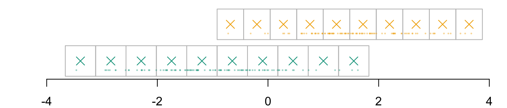
Imagine that we want to transport the following individual:
id_indiv <-2indiv <- D_SXY_0[id_indiv, ]indiv
S X1 X2 Y
2 0 0.87045 0.008499458 1
Instead of being in group \(s=0\), we would like it to be in group \(s=1\). Assume here that we want to transport its \(x_1\) characteristic.
Code
par(mar =c(2,2,0,0))plot( vx1_example_0, vx1_example_0*0, xlab ="", ylab ="", axes =FALSE, col =NA, xlim =c(-4, 4), ylim =c(.5, 1.7))axis(1)for(i in1:n_grid_example) {rect(vx1_example_0[i], .5, vx1_example_0[i+1], 1, border="grey")}points(D_SXY_0$X1, y =rep(.6, nrow(D_SXY_0)), col =alpha(colours["A"], .3), pch =19, cex = .2)points(vx1_example_0_mid, y =rep(.75, n_grid_example), col = colours["A"], pch =4, cex =1.5)for(i in1:n_grid_example) {rect(vx1_example_1[i], 1.1, vx1_example_1[i+1], 1.6, border="grey")}points(D_SXY_1$X1, y =rep(1.2, nrow(D_SXY_1)), col =alpha(colours["B"], .3), pch =19, cex = .2)points(vx1_example_1_mid, y =rep(1.35, n_grid_example), col = colours["B"], pch =4, cex =1.5)points(D_SXY_0[id_indiv, "X1"], .6, col ="red", pch =19, cex =1.5)
Figure 3.2: The individual from group \(s=0\) for which we want to get a counterfactual
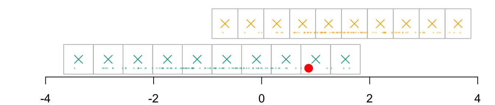
We identify in which cell of the grid that individual belongs, indexed \(i_0\):
par(mar =c(2,2,0,0))plot( vx1_example_0, vx1_example_0*0, xlab ="", ylab ="", axes =FALSE, col =NA, xlim =c(-4, 4), ylim =c(.5, 1.7))axis(1)for(i in1:n_grid_example) {rect(vx1_example_0[i], .5, vx1_example_0[i+1], 1, border="grey")}points(D_SXY_0$X1, y =rep(.6, nrow(D_SXY_0)), col =alpha(colours["A"], .3), pch =19, cex = .2)points(vx1_example_0_mid, y =rep(.75, n_grid_example), col = colours["A"], pch =4, cex =1.5)for(i in1:n_grid_example) {rect(vx1_example_1[i], 1.1, vx1_example_1[i+1], 1.6, border="grey")}points(D_SXY_1$X1, y =rep(1.2, nrow(D_SXY_1)), col =alpha(colours["B"], .3), pch =19, cex = .2)points(vx1_example_1_mid, y =rep(1.35, n_grid_example), col = colours["B"], pch =4, cex =1.5)# Individual of interestpoints(D_SXY_0[id_indiv, "X1"], .6, col ="red", pch =19, cex =1.5)# Cell in which the individual belongs torect(vx1_example_0[i_0], .5, vx1_example_0[i_0+1], 1, border="red")
Figure 3.3: The cell for the \(x_1\) dimension in which that individual belongs to
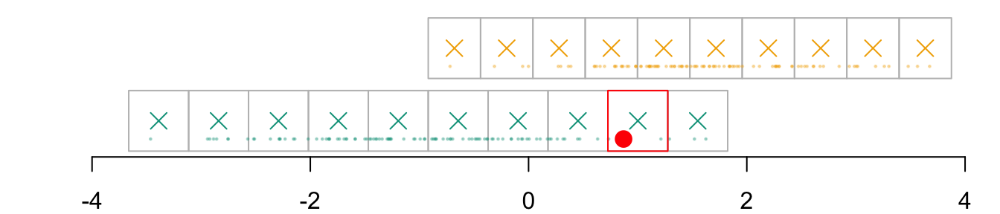
We need to find the corresponding cell in the grid of the other group, \(\boldsymbol{g}_{x_1|s=1}\). The correspondence is based on quantiles. First, we compute the c.d.f. at each coordinate of the grid: \(F_{x_1|s=0}\).
We need to find the quantile for that level in the distribution of the other group. To that end, we compute the quantiles of \(x_1\) in group \(s=1\), i.e., \(Q_{x_1|s=1}\):
The transported value for \(x_1\), \(x_1^* = T_1^*(x_1)\), is thus:
(x1star <- q1_1_example[i_1])
90.90909%
2.938658
And that point belongs in the following cell \(\boldsymbol{g}_{x_1, k_1|s=0}\):
(k1 <-which.min(abs(vx1_example_1_mid - x1star)))
[1] 9
Code
par(mar =c(2,2,0,0))plot( vx1_example_0, vx1_example_0*0, xlab ="", ylab ="", axes =FALSE, col =NA, xlim =c(-4, 4), ylim =c(.5, 1.7))axis(1)for(i in1:n_grid_example) {rect( vx1_example_0[i], .5, vx1_example_0[i+1], 1, border="grey",col = scales::alpha(colours["A"], f1_0_example[i]) )}points(D_SXY_0$X1, y =rep(.6, nrow(D_SXY_0)), col =alpha(colours["A"], .3), pch =19, cex = .2)points(vx1_example_0_mid, y =rep(.75, n_grid_example), col = colours["A"], pch =4, cex =1.5)for(i in1:n_grid_example) {rect(vx1_example_1[i], 1.1, vx1_example_1[i+1], 1.6, border="grey",col = scales::alpha(colours["B"], u[i]) )}points(D_SXY_1$X1, y =rep(1.2, nrow(D_SXY_1)), col =alpha(colours["B"], .3), pch =19, cex = .2)points(vx1_example_1_mid, y =rep(1.35, n_grid_example), col = colours["B"], pch =4, cex =1.5)# Individual of interestx1 <- D_SXY_0[id_indiv, "X1"]points(D_SXY_0[id_indiv, "X1"], .6, col ="red", pch =19, cex =1.5)# Cell in which the individual belongs torect(vx1_example_0[i_0], .5, vx1_example_0[i_0+1], 1, border="red")# Corresponding cell in other group, based on quantilerect(vx1_example_1[k1], 1.1, vx1_example_1[k1+1], 1.6, border="blue")points(x1star, y =1.35, col ="black", pch =19, cex =1.5)
Figure 3.5: The matched cell in the other group, and the transport of \(x_1\) from \(s=0\) to \(s=1\)
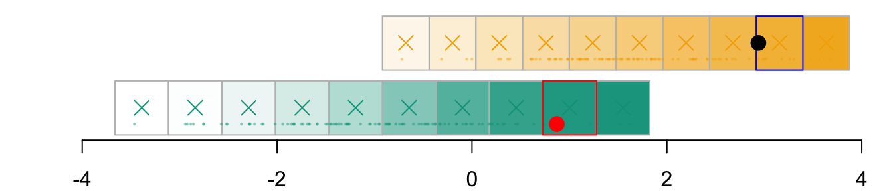
3.3.2 Transport of \(x_2\)
Now that we have transported \(x_1\) for our individual, we need to transport \(x_2\), to obtain \(x_2^* = T_2^*(x_2 | x_1)\).
As before, we define coordinates for a grid in the second dimension, beginning with \(\boldsymbol{g}_{x_2 | s = 0}\)
vx2_example_0 <-seq(min(D_SXY_0$X2) - h, max(D_SXY_0$X2) + h, length = n_grid_example +1)vx2_example_0 # coordinates for the cells in dimension 2 for group 0
vx2_example_1 <-seq(min(D_SXY_1$X2) - h, max(D_SXY_1$X2) + h, length = n_grid_example +1)vx2_example_1 # coordinates for the cells in dimension 2 for group 1
par(mar =c(2,2,0,0))plot( vx1_example_0, vx2_example_0, xlab ="", ylab ="", axes =FALSE, col =NA, xlim =c(-4, 5), ylim =c(-4, 5))axis(1)axis(2)# Grid for Group 0for (i in1:n_grid_example) {for (j in1:n_grid_example)rect(xleft = vx1_example_0[i], ybottom = vx2_example_0[j], xright = vx1_example_0[i+1], ytop = vx2_example_0[j+1],border =alpha(colours["A"], .4) )}# Observed valuespoints(D_SXY_0$X1, D_SXY_0$X2, col =alpha(colours["A"], .4), pch =19, cex = .1)# Estimated densitycontour( f0_2d$eval.point[[1]], f0_2d$eval.point[[2]], f0_2d$estimate,col=scales::alpha(colours["A"], 1),add =TRUE)# Grid for Group 1for (i in1:n_grid_example) {for (j in1:n_grid_example)rect(xleft = vx1_example_1[i], ybottom = vx2_example_1[j], xright = vx1_example_1[i+1], ytop = vx2_example_1[j+1],border =alpha(colours["B"], .4) )}points(D_SXY_1$X1, D_SXY_1$X2, col =alpha(colours["B"], .4), pch =19, cex = .1)contour( f1_2d$eval.point[[1]], f1_2d$eval.point[[2]], f1_2d$estimate,col=scales::alpha(colours["B"], 1),add =TRUE)# Point of interestpoints(indiv$X1, indiv$X2, col ="red", pch =19)# identified cells in the dimension x1, in group 0rect(xleft = vx1_example_0[k0], ybottom = vx2_example_0[1], xright = vx1_example_0[k0+1], ytop = vx2_example_0[n_grid_example+1],border="red")# corresponding cells in the same dimension, in group 1rect(xleft = vx1_example_1[k0], ybottom = vx2_example_1[1], xright = vx1_example_1[k0+1], ytop = vx2_example_1[n_grid_example+1],border="blue")# midpoints of these cellspoints(rep(vx1_example_1_mid[k0],n_grid_example), vx2_example_1_mid, col = colours["B"], pch =4)
Figure 3.7: The transported point from \(s=0\) to \(s=1\) when sequentially transporting by \(x_1\) and then by \(x_2 | x_1\) will be in the blue rectangle
The coordinate \(x_2\) of the individuals is:
(x2 <- indiv$X2)
[1] 0.008499458
And the cell in which this point belongs to in the grid for that dimension (\(\boldsymbol{g}_{x_2|s=0}\)) needs to be identified. To do so, we look at how close the point is from each middle point of the grid from the second coordinate in group \(s=0\):
vx2_example_0_mid <- (vx2_example_0[2:(1+ n_grid_example)] + vx2_example_0[1:(n_grid_example)]) /2# identify closest cell in s=0 for x2 coordinate(i_0 <-which.min(abs(vx2_example_0_mid - x2)))
[1] 7
Code
par(mar =c(2,2,0,0))plot( vx1_example_0, vx2_example_0, xlab ="", ylab ="", axes =FALSE, col =NA, xlim =c(-4, 5), ylim =c(-4, 5))axis(1)axis(2)# Grid for Group 0for (i in1:n_grid_example) {for (j in1:n_grid_example)rect(xleft = vx1_example_0[i], ybottom = vx2_example_0[j], xright = vx1_example_0[i+1], ytop = vx2_example_0[j+1],border =alpha(colours["A"], .4) )}# Observed valuespoints(D_SXY_0$X1, D_SXY_0$X2, col =alpha(colours["A"], .4), pch =19, cex = .1)# Estimated densitycontour( f0_2d$eval.point[[1]], f0_2d$eval.point[[2]], f0_2d$estimate,col=scales::alpha(colours["A"], 1),add =TRUE)# Grid for Group 1for (i in1:n_grid_example) {for (j in1:n_grid_example)rect(xleft = vx1_example_1[i], ybottom = vx2_example_1[j], xright = vx1_example_1[i+1], ytop = vx2_example_1[j+1],border =alpha(colours["B"], .4) )}points(D_SXY_1$X1, D_SXY_1$X2, col =alpha(colours["B"], .4), pch =19, cex = .1)contour( f1_2d$eval.point[[1]], f1_2d$eval.point[[2]], f1_2d$estimate,col=scales::alpha(colours["B"], 1),add =TRUE)# Point of interestpoints(indiv$X1, indiv$X2, col ="red", pch =19)# identified cells in the dimension x1, in group 0rect(xleft = vx1_example_0[k0], ybottom = vx2_example_0[1], xright = vx1_example_0[k0+1], ytop = vx2_example_0[n_grid_example+1],border="red")# Identified cell in the dimension x2, in group 0rect(xleft = vx1_example_0[k0], ybottom = vx2_example_0[i_0], xright = vx1_example_0[k0+1], ytop = vx2_example_0[i_0+1],border ="red", lwd =2)# corresponding cells in the same dimension, in group 1rect(xleft = vx1_example_1[k0], ybottom = vx2_example_1[1], xright = vx1_example_1[k0+1], ytop = vx2_example_1[n_grid_example+1],border="blue")# midpoints of these cellspoints(rep(vx1_example_1_mid[k0],n_grid_example), vx2_example_1_mid, col = colours["B"], pch =4)
Figure 3.8: The cell in which the inddividual belongs to in the second coordinate is identified
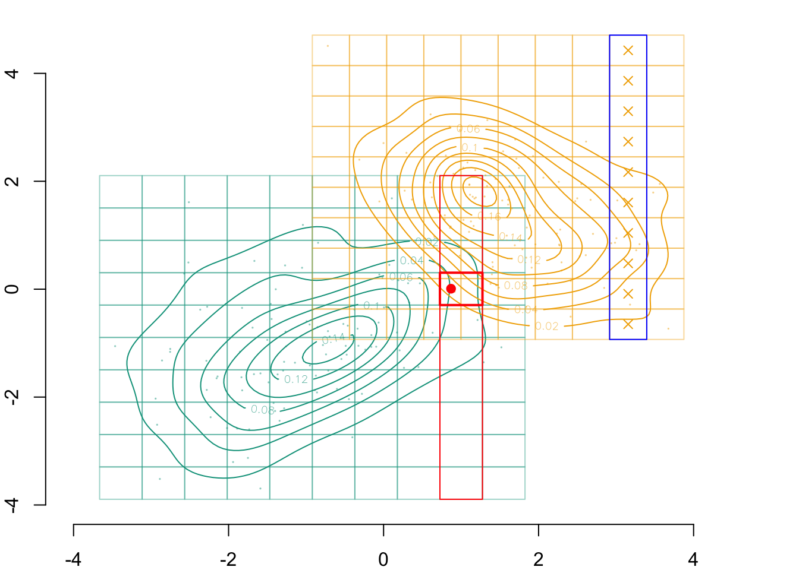
To transport \(x_2\) conditionally on \(x_1\), we need to compute the c.d.f. of \(x_2\) in group 0 conditional on \(x_1\), i.e., \(F_{x_2|s=0}[\cdot, \boldsymbol{i}]\) (where \(\boldsymbol{i}=\{1, \ldots, 10\}\) here, since \(x_2\) only has one parent among \(\boldsymbol{v}\)). To do so, we use an iterative process: we loop over the grid in the dimension of \(x_1\) (the parent), and then, for each cell, we identify the points in the neighborhood with respect to their \(x_1\) coordinates, and then, we can compute the c.d.f. at each point of the grid in the second dimension.
During the iteration process, we also compute the quantiles of \(x_2\) conditional on \(x_1\), but in the group \(s=1\), i.e., \(Q_{x_2|s=1}[\cdot,\boldsymbol{i}]\).
# setting a neighborhoodd <- .5F2_0 <-matrix(NA, n_grid_example, n_grid_example)Q2_1 <-matrix(NA, n_grid_example, n_grid_example)for (i in1:n_grid_example) {# Identify points in group 0 close to the coordinate x1 of the midpoint of# the current cell idx1_0 <-which(abs(D_SXY_0$X1 - vx1_example_0_mid[i]) < d)# c.d.f. FdR2_0 <-Vectorize(function(x) mean(D_SXY_0$X2[idx1_0] <= x)) F2_0[,i] <-FdR2_0(vx2_example_0_mid)# Identify points in group 1 close to the coordinate x1 of the midpoint of# the current cell idx1_1 <-which(abs(D_SXY_1$X1 - vx1_example_1_mid[i]) < d) Qtl2_1 <-Vectorize(function(x) quantile(D_SXY_1$X2[idx1_1], x)) Q2_1[,i] =Qtl2_1(u)}
Let us visualize the estimated c.d.f. in each cell of the complete grid in group 0:
Code
par(mar =c(2,2,0,0))plot( vx1_example_0, vx2_example_0, xlab ="", ylab ="", axes =FALSE, col =NA, xlim =c(-4, 5), ylim =c(-4, 5))axis(1)axis(2)# Grid for Group 0for (i in1:n_grid_example) {for (j in1:n_grid_example)rect(xleft = vx1_example_0[i], ybottom = vx2_example_0[j], xright = vx1_example_0[i+1], ytop = vx2_example_0[j+1],border =alpha(colours["A"], .4),col =alpha(colours["A"], F2_0[i,j]/2) )}# Observed valuespoints(D_SXY_0$X1, D_SXY_0$X2, col =alpha(colours["A"], .4), pch =19, cex = .1)# Estimated densitycontour( f0_2d$eval.point[[1]], f0_2d$eval.point[[2]], f0_2d$estimate,col=scales::alpha(colours["A"], 1),add =TRUE)# Grid for Group 1for (i in1:n_grid_example) {for (j in1:n_grid_example)rect(xleft = vx1_example_1[i], ybottom = vx2_example_1[j], xright = vx1_example_1[i+1], ytop = vx2_example_1[j+1],border =alpha(colours["B"], .4) )}points(D_SXY_1$X1, D_SXY_1$X2, col =alpha(colours["B"], .4), pch =19, cex = .1)contour( f1_2d$eval.point[[1]], f1_2d$eval.point[[2]], f1_2d$estimate,col=scales::alpha(colours["B"], 1),add =TRUE)# Point of interestpoints(indiv$X1, indiv$X2, col ="red", pch =19)# identified cells in the dimension x1, in group 0rect(xleft = vx1_example_0[k0], ybottom = vx2_example_0[1], xright = vx1_example_0[k0+1], ytop = vx2_example_0[n_grid_example+1],border="red")# Identified cell in the dimension x2, in group 0rect(xleft = vx1_example_0[k0], ybottom = vx2_example_0[i_0], xright = vx1_example_0[k0+1], ytop = vx2_example_0[i_0+1],border ="red", lwd =2)# corresponding cells in the same dimension, in group 1rect(xleft = vx1_example_1[k0], ybottom = vx2_example_1[1], xright = vx1_example_1[k0+1], ytop = vx2_example_1[n_grid_example+1],border="blue")# midpoints of these cellspoints(rep(vx1_example_1_mid[k0],n_grid_example), vx2_example_1_mid, col = colours["B"], pch =4)
Figure 3.9: The conditional c.d.f of \(x_2 | x_1\) in group \(s=0\).
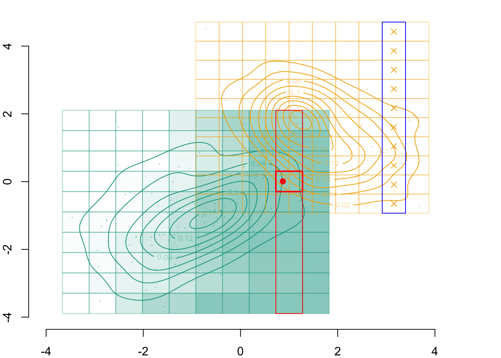
And the estimated conditional quantiles of \(x_2 | x_1\) in the group \(s=1\), \(Q_{x_2|s=1[\cdot, \boldsymbol{i}]}\):
Code
par(mar =c(2,2,0,0))plot( vx1_example_0, vx2_example_0, xlab ="", ylab ="", axes =FALSE, col =NA, xlim =c(-4, 5), ylim =c(-4, 5))axis(1)axis(2)# Grid for Group 0for (i in1:n_grid_example) {for (j in1:n_grid_example)rect(xleft = vx1_example_0[i], ybottom = vx2_example_0[j], xright = vx1_example_0[i+1], ytop = vx2_example_0[j+1],border =alpha(colours["A"], .4),col =alpha(colours["A"], F2_0[i,j]/3) )}# Observed valuespoints(D_SXY_0$X1, D_SXY_0$X2, col =alpha(colours["A"], .4), pch =19, cex = .1)# Estimated densitycontour( f0_2d$eval.point[[1]], f0_2d$eval.point[[2]], f0_2d$estimate,col=scales::alpha(colours["A"], 1),add =TRUE)# Grid for Group 1for (i in1:n_grid_example) {for (j in1:n_grid_example)rect(xleft = vx1_example_1[i], ybottom = vx2_example_1[j], xright = vx1_example_1[i+1], ytop = vx2_example_1[j+1],border =alpha(colours["B"], .4),col =alpha(colours["B"], Q2_1[i,j]/3) )}points(D_SXY_1$X1, D_SXY_1$X2, col =alpha(colours["B"], .4), pch =19, cex = .1)contour( f1_2d$eval.point[[1]], f1_2d$eval.point[[2]], f1_2d$estimate,col=scales::alpha(colours["B"], 1),add =TRUE)# Point of interestpoints(indiv$X1, indiv$X2, col ="red", pch =19)# identified cells in the dimension x1, in group 0rect(xleft = vx1_example_0[k0], ybottom = vx2_example_0[1], xright = vx1_example_0[k0+1], ytop = vx2_example_0[n_grid_example+1],border="red")# Identified cell in the dimension x2, in group 0rect(xleft = vx1_example_0[k0], ybottom = vx2_example_0[i_0], xright = vx1_example_0[k0+1], ytop = vx2_example_0[i_0+1],border ="red", lwd =2)# corresponding cells in the same dimension, in group 1rect(xleft = vx1_example_1[k0], ybottom = vx2_example_1[1], xright = vx1_example_1[k0+1], ytop = vx2_example_1[n_grid_example+1],border="blue")
Figure 3.10: The conditional quantiles of \(x_2 | x_1\) in group \(s=1\).
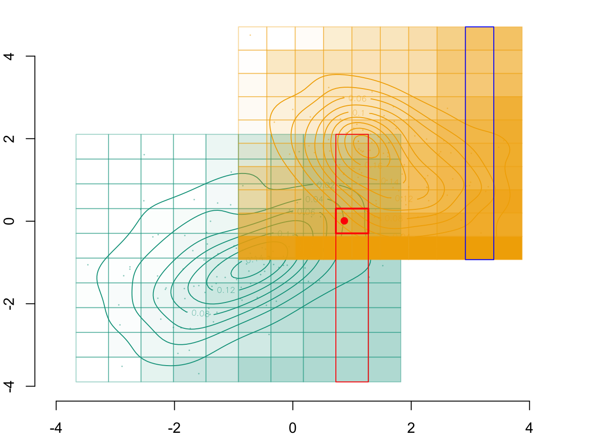
Lastly, we can identify the c.d.f. in the identified cell:
# c.d.f. for the closest cell in s=0 for x2 coordinates(p <- F2_0[i_0, k0])
[1] 0.6
The corresponding quantile level:
(i_1 <-which.min(abs(u - p)))
[1] 7
And the quantile in group \(s=1\), which is therefore the transported value of \(x_2 | x_1\), \(T_2^*(x_2 | x_1)\):
(x2star <- Q2_1[i_1, k1])
[1] 1.025227
The corresponding cell in group \(s=1\) for dimension \(x_2\):
# A tibble: 1 × 3
S X1 X2
<dbl> <dbl> <dbl>
1 1 2.94 1.03
Code
par(mar =c(2,2,0,0))plot( vx1_example_0, vx2_example_0, xlab ="", ylab ="", axes =FALSE, col =NA, xlim =c(-4, 5), ylim =c(-4, 5))axis(1)axis(2)# Grid for Group 0for (i in1:n_grid_example) {for (j in1:n_grid_example)rect(xleft = vx1_example_0[i], ybottom = vx2_example_0[j], xright = vx1_example_0[i+1], ytop = vx2_example_0[j+1],border =alpha(colours["A"], .4),col =alpha(colours["A"], F2_0[i,j]/3) )}# Observed valuespoints(D_SXY_0$X1, D_SXY_0$X2, col =alpha(colours["A"], .4), pch =19, cex = .1)# Estimated densitycontour( f0_2d$eval.point[[1]], f0_2d$eval.point[[2]], f0_2d$estimate,col=scales::alpha(colours["A"], 1),add =TRUE)# Grid for Group 1for (i in1:n_grid_example) {for (j in1:n_grid_example)rect(xleft = vx1_example_1[i], ybottom = vx2_example_1[j], xright = vx1_example_1[i+1], ytop = vx2_example_1[j+1],border =alpha(colours["B"], .4),col =alpha(colours["B"], Q2_1[i,j]/3) )}points(D_SXY_1$X1, D_SXY_1$X2, col =alpha(colours["B"], .4), pch =19, cex = .1)contour( f1_2d$eval.point[[1]], f1_2d$eval.point[[2]], f1_2d$estimate,col=scales::alpha(colours["B"], 1),add =TRUE)# Point of interestpoints(indiv$X1, indiv$X2, col ="red", pch =19)# identified cells in the dimension x1, in group 0rect(xleft = vx1_example_0[k0], ybottom = vx2_example_0[1], xright = vx1_example_0[k0+1], ytop = vx2_example_0[n_grid_example+1],border="red")# Identified cell in the dimension x2, in group 0rect(xleft = vx1_example_0[k0], ybottom = vx2_example_0[i_0], xright = vx1_example_0[k0+1], ytop = vx2_example_0[i_0+1],border ="red", lwd =2)# corresponding cells in the same dimension, in group 1rect(xleft = vx1_example_1[k0], ybottom = vx2_example_1[1], xright = vx1_example_1[k0+1], ytop = vx2_example_1[n_grid_example+1],border="blue")rect(xleft = vx1_example_1[k0], ybottom = vx2_example_1[k2], xright = vx1_example_1[k0+1], ytop = vx2_example_1[k2+1],border ="blue", lwd =2)points(x1star, x2star, col ="black", pch =19)
Transported value of (\(s=0, x_1, x_2\)) in group 0 to (\(s=1, x_1^* = T_1*(x_1), x_2^* = T_2^*(x_2 | x_1)\))
3.4 Larger grid
Let us now consider a much larger grid of \(500\times 500\) instead of \(10\times 10\).
n_grid <-500h <- .2
We can then compute the coordinates of each cell in each dimension, \(g_{j|s}\) for all variable \(j \in \{x_1,x2\}\). As the bounds of the feature space might differ between each group (0 and 1), we make different grids for each group.
# Group 0## First dimension (x1)vx1_0 <-seq(min(D_SXY_0$X1) - h, max(D_SXY_0$X1) + h, length = n_grid +1)## Second dimension (x2)vx2_0 <-seq(min(D_SXY_0$X2) - h, max(D_SXY_0$X2) + h, length = n_grid +1)# Group 1## First dimension (x1)vx1_1 <-seq(min(D_SXY_1$X1) - h, max(D_SXY_1$X1) + h, length = n_grid +1)## Second dimension (x2)vx2_1 <-seq(min(D_SXY_1$X2) - h, max(D_SXY_1$X2) + h, length = n_grid +1)
Let us make predictions with the model presented in Section 4.6.3 on a grid:
vx0 <-seq(-5, 5, length =251)data_grid <-expand.grid(x = vx0, y = vx0)L0 <-logistique_reg(x1 = data_grid$x, x2 = data_grid$y, s =0)L1 <-logistique_reg(x1 = data_grid$x, x2 = data_grid$y, s =1)# as a grid:dlogistique0 <-matrix(L0, length(vx0), length(vx0))dlogistique1 <-matrix(L1, length(vx0), length(vx0))
3.4.1 Functions for Sequential Transport
Let us define a function to perform the transport of \(x_0\) from \(s=0\) to \(s_1\), i.e., \(T_1^*(x_1)\)
#' Transport of x1 from s=0 to s=1#' #' @param x2 vector of x2's values#' @descriptions#' - vx1_0_mid: coordinates of center of cells (axis x1, s=0)#' - f1_0: c.d.f. values for x1 in group s=0#' - u: quantile levels#' - q1_1: quantile values for x1 in group s=1transport_x1 <-function(x1) {# identify closest cell of the grid to the coordinates of x1 in group s=0 i <-which.min(abs(vx1_0_mid - x1))# c.d.f. for that cell, in group s=0 p <- f1_0[i]# identify closest quantile level i <-which.min(abs(u - p))# corresponding quantile in group s=1 x1star <- q1_1[i] x1star}
Another function to transport \(x_2\) from \(s=0\) to \(s=1\), i.e., \(T_2^*(x_2)\):
#' Transport of x2 from s=0 to s=1#' #' @param x2 vector of x2's values#' @descriptions#' - vx2_0_mid: coordinates of center of cells (axis x2, s=0)#' - f2_0: c.d.f. values for x2 in group s=0#' - u: quantile levels#' - q2_1: quantile values of x2 in group s=1transport_x2 <-function(x2) {# identify closest cell of the grid to the coordinates of x2 in group s=0 i <-which.min(abs(vx2_0_mid - x2))# c.d.f. for that cell, in group s=0 p <- f2_0[i]# identify closest quantile level i <-which.min(abs(u - p))# corresponding quantile in group s=1 x2star <- q2_1[i] x2star}
A function to transport \(x_1\) conditionally on \(x_2\), i.e., \(T_1^*(x_1 | x_2)\):
#' Transport for x1 conditional on x2, from s=0 to s=1#' #' @param x1 numerical vector with x1's values#' @param x2 numerical vector with x2's values#' @description#' - vx2_0_mid: coordinates of center of cells (axis x2, s=0)#' - vx2_1_mid: coordinates of center of cells (axis x2, s=1)#' - vx1_0_mid: coordinates of center of cells (axis x1, s=0)transport_x1_cond_x2 <-function(x1, x2) {# identify closest cell in s=0 for x2 coordinate k0 <-which.min(abs(vx2_0_mid - x2))# identify closest cell in s=1 for transported x2 coordinate k1 <-which.min(abs(vx2_1_mid -transport_x2(x2)))# identify closest cell in s=0 for x1 coordinate i_0 <-which.min(abs(vx1_0_mid - x1))# c.d.f. for the closest cell in s=0 for x1 coordinates p <- F1_0[i_0, k0]# identify closest quantile level i_1 <-which.min(abs(u - p))# corresponding quantile in group s=1 x1star <- Q1_1[i_1, k1] x1star}
And a last function to transport \(x_2\) conditionally on \(x_1\), i.e., \(T_2^*(x_2 |x_1)\):
#' Transport for x2 conditional on x1, from s=0 to s=1#' #' @param x2 numerical vector with x2's values#' @param x1 numerical vector with x1's values#' @description#' - vx1_0_mid: coordinates of center of cells (axis x1, s=0)#' - vx1_1_mid: coordinates of center of cells (axis x1, s=1)#' - vx2_0_mid: coordinates of center of cells (axis x2, s=0)transport_x2_cond_x1 <-function(x2, x1){# identify closest cell in s=0 for x1 coordinate k0 <-which.min(abs(vx1_0_mid - x1))# identify closest cell in s=1 for transported x1 coordinate k1 <-which.min(abs(vx1_1_mid -transport_x1(x1)))# identify closest cell in s=0 for x2 coordinate i_0 <-which.min(abs(vx2_0_mid - x2))# c.d.f. for the closest cell in s=0 for x2 coordinates p <- F2_0[i_0, k0]# identify closest quantile level i_1 <-which.min(abs(u - p))# corresponding quantile in group s=1 x2star <- Q2_1[i_1, k1] x2star}
Code
par(mar =c(2,2,0,0))# Group 0## Estimated density: level curves for (x1, x2) -> m(0, x1, x2)contour( f0_2d$eval.point[[1]], f0_2d$eval.point[[2]], f0_2d$estimate,col=scales::alpha(colours["A"], 1),axes =FALSE, xlab ="", ylab ="")# Contour of estimates by the modelcontour( vx0, vx0, dlogistique0,levels = (1:9) /10,col = scl, lwd =1.6,add =TRUE)axis(1)axis(2)
Figure 3.11: Level curves for \((x_1, x_2) \rightarrow m(0, x_1, x_2)\) In the background, estimated density of \((s=0, x_1, x_2)\) (level curves).
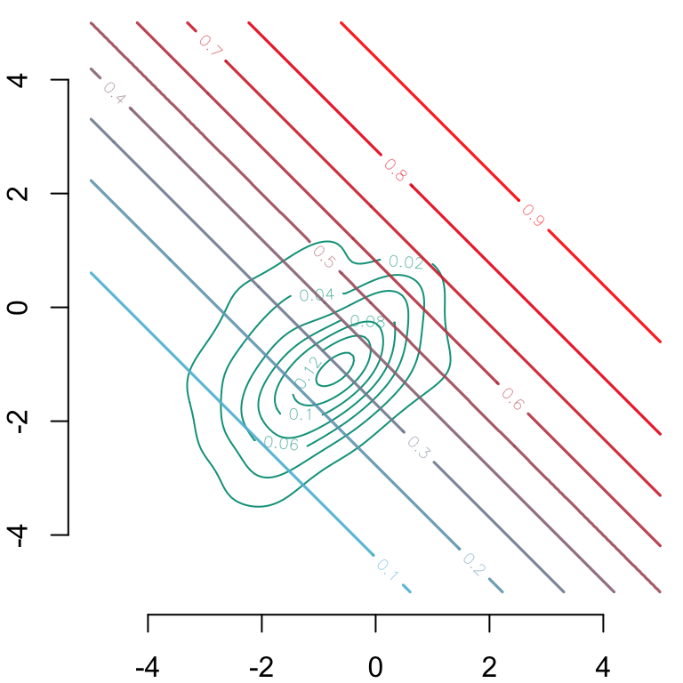
Code
# Group 1## Estimated density: level curves for (x1, x2) -> m(1, x1, x2)contour( f1_2d$eval.point[[1]], f1_2d$eval.point[[2]], f1_2d$estimate,col = scales::alpha(colours["B"], 1),axes =FALSE, xlab ="", ylab ="")# Contour of estimates by the modelcontour( vx0, vx0, dlogistique1, col = scl,add =TRUE,levels = (1:9) /10,lwd =1.6)axis(1)axis(2)
Figure 3.12: Level curves for \((x_1, x_2) \rightarrow m(1, x_1, x_2)\) In the background, estimated density of \((s=1, x_1, x_2)\) (level curves).
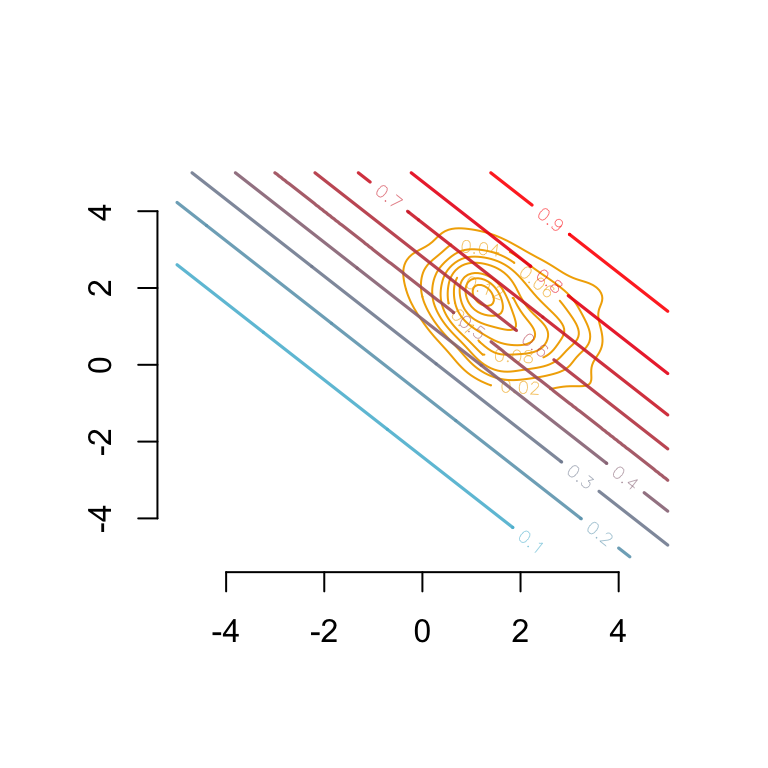
Let us focus on individual \((s, -2, 1)\).
xystart <-c(-2,-1)
Let us make multiple predictions for that individual, given the assumed structural model.
Figure 3.13: Causal network with two legitimate mitigating variables \(x_1\) and \(x_2\).
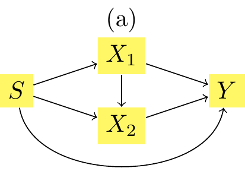
Figure 3.14: Causal network with two legitimate mitigating variables \(x_1\) and \(x_2\).
x2_then_x1: \(T_1^*(x1 | x2), T_2^*(x2)\), the transported value when assuming the structural model shown in Figure 3.14
x1_then_x2: \(T_1^*(x1), T_2^*(x2|x_1)\), the transported value when assuming the structural model shown in Figure 3.13
x1_intermediaire: \((T_1^*(x1), x2)\), the transported value for \(x_1\) only
x2_intermediaire: \((x1, T_2^*(x2))\), the transported value for \(x_2\) only.
Let us first explore the mutatis mutandis difference \(m(s=1, x_1^*, x_2^*) - m(s = 0, x1, x_2)\). If we assume the causal structure as in Figure 3.13, it is equal to:
v[3] - v[1]
[1] 0.2270248
This can be decomposed as follows:
the change du to the impact of \(s\) only, \(m(s=1,x_1,x_2) - m(s=0,x_1,x_2)\) (i.e., the ceteris paribus impact):
v[2] - v[1]
[1] -0.1065673
the change due to the impact of \(s\) on \(x_1\), i.e., \(m(s=1,x^\star_1,x_2) - m(s=1,x_1,x_2)\):
v[5] - v[2]
[1] 0.1799062
the change due to the impact of both \(s\) and \(x_1\) on \(x_2\), i.e., \(m(s=1,x^\star_1,x^\star_2) - m(s=1,x^\star_1,x_2)\):
v[3] - v[5]
[1] 0.1536859
If, instead, we assume the causal structure as in Figure 3.14, the mutatis mutandis effect, \(m(s=1, x_1^*, x_2^*) - m(s = 0, x1, x_2)\), would be:
v[4] - v[1]
[1] 0.3582317
This can be decomposed as follows:
the change du to the impact of \(s\) only, \(m(s=1,x_1,x_2) - m(s=0,x_1,x_2)\) (i.e., the ceteris paribus impact):
v[2] - v[1]
[1] -0.1065673
the change due to the impact of \(s\) on \(x_2\), i.e., \(m(s=1,x_1,x_2^*) - m(s=1,x_1,x_2)\):
v[6] - v[2]
[1] 0.1607265
the change due to the impact of both \(s\) and \(x_2\) on \(x_1\), i.e., \(m(s=1,x^\star_1,x^\star_2) - m(s=1,x_1,x_2^*)\):
v[4] - v[6]
[1] 0.3040725
Let us visualize this! We begin with the predicted value by the model.
par(mar =c(2, 2, 0, 0))# Group 0## Estimated density: level curves for (x1, x2) -> m(0, x1, x2)CeX <-1contour( f0_2d$eval.point[[1]], f0_2d$eval.point[[2]], f0_2d$estimate,col = scales::alpha(colours["A"], .3),axes =FALSE, xlab ="", ylab ="")# Group 1## Estimated density: level curves for (x1, x2) -> m(1, x1, x2)contour( f1_2d$eval.point[[1]], f1_2d$eval.point[[2]], f1_2d$estimate,col = scales::alpha(colours["B"], .3), add =TRUE)contour( vx0, vx0, dlogistique0,levels = (1:9)/10,col = scl,add =TRUE,lwd =2)axis(1)axis(2)#### Individual (S=0, x1=-2, x2=-1)###points(coords$start[1], coords$start[2], pch =19, cex = CeX)## Predicted value for the individual, based on factualstext( coords$start[1], coords$start[2],paste(round(v[1] *100, 1), "%", sep =""), pos =1, cex = CeX, col ="darkblue")
Figure 3.15: The predicted value by the model, \(m(s=0, x_1, x_2)\)
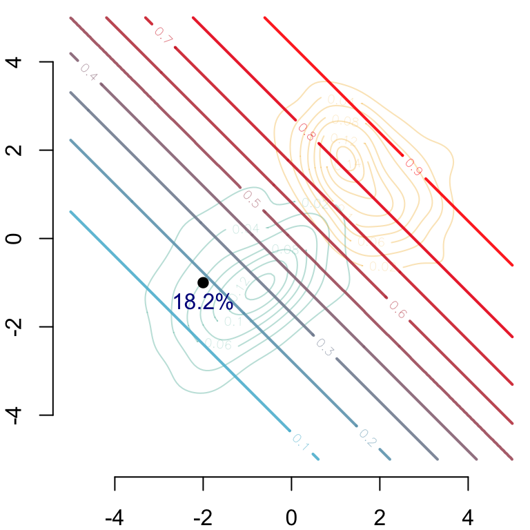
And then we can show the the predictions made on the counterfactuals depending on the causal assumption.
par(mar =c(2, 2, 0, 0))# Group 0## Estimated density: level curves for (x1, x2) -> m(0, x1, x2)contour( f0_2d$eval.point[[1]], f0_2d$eval.point[[2]], f0_2d$estimate,col = scales::alpha(colours["A"], .3),axes =FALSE, xlab ="", ylab ="")# Group 1## Estimated density: level curves for (x1, x2) -> m(1, x1, x2)contour( f1_2d$eval.point[[1]], f1_2d$eval.point[[2]], f1_2d$estimate,col = scales::alpha(colours["B"], .3), add =TRUE)# Contour of estimates by the model for s=1contour( vx0, vx0, dlogistique1,levels = (1:9) /10,col = scl, lwd=2,add =TRUE)axis(1)axis(2)#### Individual (s=0, x1=-2, x2=-1)###points(coords$start[1], coords$start[2], pch =19, cex = CeX)## Predicted value for the individual, based on factualstext( coords$start[1] - .3, coords$start[2] - .42- .3,paste(round(v[1] *100, 1), "%", sep =""), pos =1, cex = CeX, col ="darkblue")#### Transported individual when transporting x1 and then x2, i.e.,# (do(s=1), T_1^*(x1), T_2^*(x_2 | x_1))###points(coords$x1_then_x2[1],coords$x1_then_x2[2], pch =19, cex = CeX)segments(x0 = coords$start[1], y0 = coords$start[2], x1 = coords$x1_then_x2[1], y1 = coords$start[2], lwd = .8)segments(x0 = coords$x1_then_x2[1], y0 = coords$x1_then_x2[2],x1 = coords$x1_then_x2[1], y1 = coords$start[2], lwd = .8)## Intermediate pointpoints(coords$x1_then_x2[1], coords$start[2], pch =19, col ="white", cex = CeX)points(coords$x1_then_x2[1], coords$start[2], pch =1, cex = CeX)text( coords$x1_then_x2[1], coords$start[2] - .42,paste(round(v[5] *100, 1), "%", sep =""), pos =4, cex = CeX)# New predicted value for # (do(s=1), T_1^*(x1), T_2^*(x_2 | x_1))text( coords$x1_then_x2[1], coords$x1_then_x2[2],paste(round(v[3]*100,1),"%",sep=""), pos =3, cex = CeX)#### Transported individual when transporting x2 and then x1, i.e.,# (do(s=1), T_1^*(x1 | x2), T_2^*(x_2))###points(coords$x2_then_x1[1],coords$x2_then_x1[2],pch=19,cex=CeX)segments(x0 = coords$start[1], y0 = coords$start[2],x1 = coords$start[1], y1 = coords$x2_then_x1[2],lwd = .8)segments(x0 = coords$x2_then_x1[1], y0 = coords$x2_then_x1[2],x1 = coords$start[1], y1 = coords$x2_then_x1[2],lwd = .8)## Intermediate pointpoints(coords$start[1], coords$x2_then_x1[2], pch =19, col ="white", cex = CeX)points(coords$start[1], coords$x2_then_x1[2], pch =1, cex = CeX)text( coords$start[1], coords$x2_then_x1[2],paste(round(v[6] *100, 1), "%", sep =""), pos =2, cex = CeX)## New predicted value for (do(s=1), T_1^*(x1 | x2), T_2^*(x_2))text( coords$x2_then_x1[1], coords$x2_then_x1[2],paste(round(v[4] *100, 1), "%", sep =""), pos =3, cex = CeX)#### New predicted value for (do(s=1), x1, x2), no transport###ry <- .2draw.circle(x = coords$start[1] - ry, y = coords$start[2] - ry, radius = ry *sqrt(2))text( coords$start[1], coords$start[2] + .42,paste(round(v[2] *100, 1), "%", sep =""), pos =4, cex = CeX)
Figure 3.16: Two counterfactuals, based on either the causal assumption from Figure 3.13 (bottom right path) or on the causal assumption from Figure 3.14 (top left path)